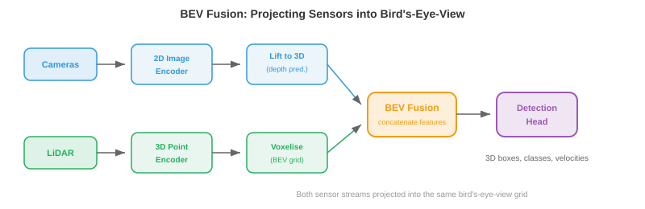
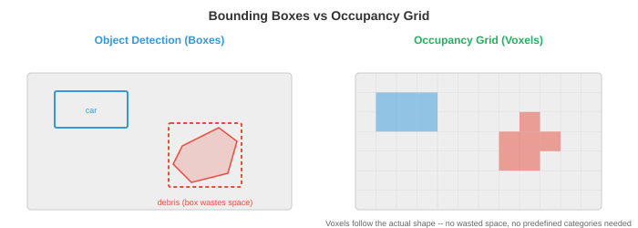

Perception¶
Perception 是自主系统感知和解读物理世界的方式。本文涵盖传感器模态、标定、sensor fusion、3D 物体检测、深度估计、占据网络、车道检测和语义建图——每个 robot、无人机和自动驾驶汽车赖以构建的感知基础。
-
对人类而言，感知世界毫不费力：你看到一辆车驶来，听到引擎声，脚下感受到地面，脑中瞬间构建出周围环境的心理模型。自主系统必须做同样的事，但用的是电子传感器和算法，而非眼睛和耳朵。
-
核心挑战在于：传感器给出的是原始数字（像素强度、point cloud、信号反射），而系统必须将这些数字转化为结构化的理解："前方 12 米处有一名行人，正以 1.5 m/s 的速度向左移动。" 这就是 perception 问题。
-
下游的一切（预测、规划、控制）都依赖于 perception。一辆拥有完美规划器但 perception 薄弱的自动驾驶汽车仍然会发生碰撞。Perception 是瓶颈所在。
Sensor Modalities¶
- 自主系统使用多种传感器，各有不同的优势和故障模式。没有任何单一传感器能独立应对所有情况。

-
Camera 以高分辨率捕获密集的彩色信息。单张图像包含数百万像素，每个像素记录 RGB 值（见第 8 章）。Camera 价格低廉、重量轻，能提供丰富的纹理和颜色信息，对于读取标志、检测交通灯和识别物体至关重要。
-
Camera 类型包括：单目（单镜头，没有原生深度信息）、双目（两个镜头以一定基线间距排列，通过视差获取深度，见第 8 章）以及鱼眼（超宽视角，180°+，具有严重的径向畸变，用于环绕视角泊车系统）。
-
Camera 的主要弱点是在投影过程中丢失深度信息。通过小孔 camera 模型，三维场景被映射到二维图像平面上（回顾第 8 章的内参矩阵 \(K\)）：
-
除以 \(Z\) 会丢弃绝对深度。不同大小、不同距离的两个物体可能产生完全相同的投影。从单张图像中恢复深度是一个不适定问题，这就是为什么需要双目 camera 或学习型单目深度模型。
-
Camera 在恶劣条件下也表现欠佳：强烈阳光会引起眩光，黑暗减弱信号，雨或雾散射光线。
-
LiDAR（Light Detection and Ranging）发射激光脉冲并测量每个脉冲反射回来所需的时间。由于光以已知速度（\(c \approx 3 \times 10^8\) m/s）传播，到每个反射点的距离为：

-
系数 2 考虑了往返行程（出去和回来）。通过在场景中扫描激光，LiDAR 构建 point cloud：一组三维坐标 \((x, y, z)\)，通常附带强度（反射率）值。
-
旋转式 LiDAR（如 Velodyne）将激光阵列旋转 360° 以生成全向视图。典型设备通过 64–128 个垂直通道每秒生成 30 万+个点。结果是一种稀疏但几何上精确的场景三维表示。
-
固态 LiDAR 没有运动部件，使用光学相控阵列或 MEMS 反射镜代替。这使其更便宜、更紧凑、更可靠，但通常视野更窄（120° 而非 360°）。
-
LiDAR 提供精确深度，但产生的数据稀疏（"像素"比 camera 少得多），没有颜色信息，且价格昂贵。在大雨、大雪或尘土飞扬的条件下，激光脉冲被粒子散射，性能也会下降。
-
Radar（Radio Detection and Ranging）与 LiDAR 的工作原理相同——飞行时间法——但使用无线电波（毫米波，汽车通常为 77 GHz）。无线电波穿透雨、雾、尘和雪的能力远优于光，使 radar 成为天气鲁棒性最强的传感器。
-
Radar 还通过多普勒效应直接测量速度。当物体向传感器靠近时，反射波被压缩（频率升高）；当远离时，反射波被拉伸（频率降低）。速度为：
-
其中 \(\Delta f\) 是频率偏移，\(f_0\) 是发射频率。这无需任何跟踪或帧间计算即可获得瞬时径向速度。
-
代价是分辨率：radar 的角分辨率比 camera 或 LiDAR 粗糙得多，难以区分相邻物体或检测精细细节。它擅长在任何天气条件下远距离（200 米以上）检测车辆。
-
超声波传感器发射高频声波脉冲（40–70 kHz）并测量回波返回时间。它们在极短距离（0.2–5 米）内工作，主要用于泊车辅助。其物理原理与 LiDAR 相同，只是用声音代替了光，因此 \(d = \frac{v_{\text{sound}} \cdot \Delta t}{2}\)，其中 \(v_{\text{sound}} \approx 343\) m/s。
-
IMU（惯性测量单元）包含加速度计和陀螺仪，分别测量线性加速度和角速度。IMU 提供高频运动数据（通常 200–1000 Hz），填补了慢速传感器更新之间的空隙。它不直接感知环境，而是跟踪 robot 自身的运动，对于航位推算和状态估计至关重要。
-
IMU 存在漂移问题：细微的测量误差随时间积累，导致估计位置逐渐偏离现实。这就是为什么 IMU 几乎总是与其他传感器（camera、GPS、LiDAR）融合使用，而非独立使用。
-
GNSS（全球导航卫星系统，包括 GPS）通过三角测量多颗卫星信号来确定地球表面的绝对位置。标准 GPS 精度为 2–5 米，不足以实现车道级驾驶。RTK-GPS（实时动态定位）使用固定基准站校正误差，可达厘米级精度，但需要开阔天空视野和基准站基础设施。
Sensor Calibration¶
-
在传感器协同工作之前，必须对其进行标定：每个传感器的测量结果必须关联到一个公共坐标系中。
-
内参标定确定传感器的内部参数。对于 camera，这意味着焦距、主点和畸变系数（见第 8 章）。对于 LiDAR，则是激光束之间的精确角度偏移。常用方法是张氏棋盘格标定法，通过从多个角度观测已知平面图案来求解内参矩阵。
-
外参标定确定两个传感器之间的刚体变换（旋转 \(R\) 和平移 \(\mathbf{t}\)）。如果 camera 和 LiDAR 安装在同一辆车上，外参标定找到将 LiDAR 坐标系中的点映射到 camera 坐标系的 \(4 \times 4\) 变换矩阵：
-
这是齐次坐标下的仿射变换，正是我们在第 2 章（线性变换）中研究过的。矩阵出错意味着 LiDAR 点投影到错误的像素上，整个 fusion 流程就会崩溃。
-
时间标定同步传感器时钟。以 30 Hz 采集的 camera 和以 10 Hz 采集的 LiDAR 在不同时间戳下产生数据。如果一辆车以 30 m/s（高速公路速度）行驶，10 ms 的时序误差对应 30 cm 的空间误差。硬件触发（共享时钟脉冲）或软件同步（时间戳之间的插值）是必不可少的。
Sensor Fusion¶
-
没有任何单一传感器能覆盖所有条件。Camera 能看到颜色和纹理但丢失深度。LiDAR 精确测量深度但数据稀疏且无法感知颜色。Radar 在任何天气下都能工作，但分辨率差。Sensor fusion 融合各自的优势，弥补各自的不足。
-
早期 fusion（数据级 fusion）在任何处理之前融合原始传感器数据。例如，将 LiDAR 点投影到 camera 图像上以创建 RGBD 表示（每像素的颜色 + 深度），或用每个 LiDAR 点投影到的 camera 像素颜色为其上色。这保留了最多的信息，但需要精确标定，对不对准非常敏感。
-
晚期 fusion（决策级 fusion）通过各自的检测流程独立处理每个传感器，然后合并最终输出（边界框、类别标签、置信度分数）。每个传感器进行投票，fusion 模块协调分歧。这种方法更简单、更模块化，但每个流程无法受益于其他传感器的原始数据。
-
中层 fusion 在中间特征表示上进行操作。每个传感器的原始数据通过各自的方式（CNN 或 transformer）编码为学习特征空间，然后融合特征。这是现代系统的主流方法，因为它让网络自行学习从每种模态中提取什么。

-
BEVFusion 是一种典型的中层 fusion 架构。它将 camera 特征和 LiDAR 特征都投影到公共的鸟瞰视图（BEV）表示中——场景的俯视网格。Camera 特征通过预测的深度分布"提升"至三维，然后投影到 BEV 网格上。LiDAR 特征本身已是三维的，直接体素化到同一网格上。融合后的 BEV 特征随后由检测头处理。
-
BEV 表示功能强大，因为它提供了一个统一的、公制尺度的坐标系，在这里空间推理（距离、大小、重叠）非常直观。在 camera 图像中，附近的自行车和远处的卡车可能占用相同数量的像素。在 BEV 中，它们的真实大小和位置一目了然。
3D Object Detection¶
-
Perception 的核心任务是在三维空间中检测物体：它们在哪里、有多大、是什么以及朝向哪个方向？每个检测结果都是一个 3D 边界框，包含位置 \((x, y, z)\)、尺寸 \((l, w, h)\)、朝向角 \(\theta\)、类别标签和置信度分数。
-
基于 LiDAR 的检测直接在 point cloud 上操作。挑战在于 point cloud 是无序的、不规则的，密度也各不相同（近处物体有成千上万个点，远处物体只有寥寥几个）。回顾第 8 章，PointNet 通过共享 MLP 和置换不变聚合（最大池化）处理这一问题。
-
PointPillars 通过将地平面离散化为垂直列（"pillars"）网格，将 point cloud 转换为结构化表示。每个 pillar 内的所有点由一个小型 PointNet 编码为固定大小的特征向量。结果是一个二维伪图像，可由标准的 2D CNN 主干网络处理，然后跟一个检测头（类似第 8 章的 SSD 架构）。这种方法快速有效。
-
CenterPoint 将物体检测为点而非框。它在 BEV 中预测物体中心的热图，然后在每个峰值处回归框的属性（大小、高度、朝向、速度）。这是 CenterNet 的三维类比（第 8 章）：无锚框、训练时无需 NMS，并且通过跨帧关联中心点自然延伸到跟踪任务。
-
纯 camera 的 3D 检测必须从 2D 图像推断深度，这从根本上更难。BEVDet 和 BEVFormer 等现代方法使用 transformer 架构将 2D 图像特征"提升"至三维。BEVFormer 使用空间交叉注意力：BEV query 关注投影到每个 camera 图像上的特定三维参考点，从相关位置提取特征。
-
基于 LiDAR 和基于 camera 的 3D 检测之间的精度差距正在迅速缩小，这得益于更好的深度估计、更大的模型以及时序 fusion（使用多帧积累深度线索，类似于双目匹配但跨越时间）。
Depth Estimation¶
-
深度估计是为每个像素或点赋予距离值的问题。
-
双目匹配使用两个以已知基线 \(b\) 分隔的 camera。同一个三维点在两张图像中出现的水平位置略有不同（视差 \(d\)）。深度计算公式为（见第 8 章）：
-
其中 \(f\) 是焦距。挑战在于找到两张图像之间的正确对应关系，尤其是在无纹理区域、遮挡和重复图案处。现代双目网络（如 RAFT-Stereo）使用相关体积进行迭代精化。
-
单目深度估计从单张图像预测深度。由于这是不适定的（无数个三维场景可以产生同一张图像），网络必须学习统计先验："地板是平的"、"物体随距离缩小"、"纹理梯度表示向后延伸的表面"。
-
Depth Anything（见第 8 章）通过在大规模未标注数据集上进行自监督训练，然后在标注数据上微调，实现了强大的单目深度估计。关键洞见是尺度不变损失处理了固有的模糊性：模型预测相对深度（排序）而非绝对米数。
-
LiDAR-camera 深度 fusion 将稀疏的 LiDAR 深度测量投影到 camera 图像上作为监督。网络学会"填充"稀疏点之间的空隙，生成结合了 LiDAR 精度与 camera 分辨率的稠密深度图。
Occupancy Networks¶
- 传统 perception 输出一个边界框列表，每个检测到的物体对应一个框。但现实世界中有许多东西无法整齐地装入框中：形状奇特的碎片、施工护栏、悬垂的树枝、部分坍塌的墙壁。

-
Occupancy 网络将场景表示为密集的三维体素网格。每个体素（一小块空间，例如 0.2m × 0.2m × 0.2m）被分类为自由、占据或未知，并可选择赋予语义标签（道路、人行道、车辆、植被等）。
-
这是从以物体为中心的 perception（"检测汽车"）转向以场景为中心的 perception（"三维空间的哪些部分被占据？"）。优势在于通用性：系统不需要预定义的物体类别列表就能避开任意障碍物。
-
在架构上，occupancy 网络接收传感器输入（camera、LiDAR 或两者），将其编码为三维特征体积，并预测每个体素的标签。三维特征体积通常通过将二维特征提升至三维来构建（类似于 BEV 构建，但垂直延伸），并用三维卷积或稀疏卷积处理。
-
TPVFormer（三视图）通过将三维体积分解为三个正交平面（俯视、正视、侧视）来避免完整三维注意力的立方体代价。每个平面使用二维注意力，它们的特征在每个体素处组合。这让人联想到 SVD 将矩阵分解为更简单因子的方式（第 2 章）：将难解的三维问题拆解为可管理的二维片段。
-
输出体素网格直接告诉规划器哪些空间区域可以安全占据，哪些不可以，使其成为 perception 与 planning 之间的自然接口。
Lane Detection 和 Road Topology¶
-
对于在结构化道路上行驶的车辆，理解车道几何至关重要。系统必须知道车道在哪里、如何弯曲、在哪里合并和分叉，以及车辆所在的车道。
-
经典方法将参数曲线拟合到检测到的车道标记上。常用模型是三阶多项式：
-
其中 \(y\) 是前方的纵向距离，\(x\) 是横向偏移。这是多项式近似（回顾第 3 章的泰勒级数），因为道路是低次多项式能很好捕捉的平滑曲线。系数通过对检测到的车道点进行最小二乘回归来估计。
-
现代方法使用神经网络直接检测车道。LaneNet 将每条车道视为一个实例，使用 embedding 分支将属于同一车道的像素分组，然后进行曲线拟合。GANet 使用基于 graph 的方法，将车道拓扑表示为有向 graph，其中 node 是车道点，edge 编码连接关系（哪些车道在交叉口合并、分叉或连通）。
-
Road topology 超越了单条车道曲线，捕捉完整结构：车道如何相互连接、哪些车道允许左转、高速公路匝道在哪里合并。这被建模为有向 graph，交叉口为 node，车道段为具有属性（限速、车道类型、转向限制）的 edge。
-
Graph 结构对于路线规划至关重要：规划器不仅需要知道"车道在哪里"，还要知道"哪条车道序列通向目的地"。
Semantic Mapping¶
-
Perception 不仅仅是在单帧中检测物体。随着时间推移，自主系统构建一张语义地图：其环境的持久、结构化表示，跨多次观测积累信息。
-
最简单的形式，语义地图是一个二维网格（占据网格），每个格子存储被占据的概率。随着 robot 移动并用传感器扫描，它使用贝叶斯更新来更新这些概率：
- 这是贝叶斯定理的实际应用（见第 5 章）：每个新测量 \(z_t\) 更新关于每个格子的先验信念。通常使用对数几率表示，以避免多个小概率相乘带来的数值问题：
-
累加对数几率等同于概率相乘（回顾 \(\log(ab) = \log a + \log b\)），累加和自然地随时间积累证据。
-
更丰富的地图为每个格子赋予语义标签（道路、人行道、建筑物、植被），并可扩展至三维。这些与 occupancy 网络密切相关，但更强调持久性和时序聚合，而非单帧预测。
-
SLAM（Simultaneous Localisation and Mapping，同步定位与建图，见第 8 章）是在跟踪 robot 在地图中位置的同时构建地图的算法。视觉惯性 SLAM 融合 camera 和 IMU 数据；LiDAR SLAM 使用 point cloud 配准。Perception 流程将检测结果和深度估计输入 SLAM 系统，后者维护全局地图。
-
现代方法越来越多地使用神经隐式表示（如第 8 章的 NeRF）来构建密集、逼真的地图，可在任意三维点处查询。这些神经地图将整个场景的压缩表示存储在网络权重中，支持新视角合成和详细空间查询等任务。
编程练习（使用 CoLab 或 notebook）¶
-
使用投影矩阵将三维 LiDAR 点投影到二维 camera 图像上。可视化落在图像范围内的点。
import jax.numpy as jnp import matplotlib.pyplot as plt # 模拟 LiDAR 三维点（x=前方，y=左，z=上） rng = jax.random.PRNGKey(0) points_3d = jax.random.uniform(rng, (200, 3), minval=jnp.array([5, -10, -2]), maxval=jnp.array([50, 10, 3])) # Camera 内参矩阵（焦距 500，图像中心 320x240） K = jnp.array([[500, 0, 320], [0, 500, 240], [0, 0, 1.0]]) # 外参：LiDAR 到 camera（单位旋转，小平移） R = jnp.eye(3) t = jnp.array([0.0, 0.0, -0.5]) # 投影：p_cam = K @ (R @ p_lidar + t) p_cam = (R @ points_3d.T).T + t p_img = (K @ p_cam.T).T p_img = p_img[:, :2] / p_img[:, 2:3] # 除以 Z # 过滤 camera 前方且在图像范围内的点 mask = (p_cam[:, 2] > 0) & (p_img[:, 0] > 0) & (p_img[:, 0] < 640) & \ (p_img[:, 1] > 0) & (p_img[:, 1] < 480) depth = p_cam[mask, 2] plt.figure(figsize=(8, 5)) plt.scatter(p_img[mask, 0], p_img[mask, 1], c=depth, cmap="viridis", s=5) plt.colorbar(label="深度 (m)") plt.xlim(0, 640); plt.ylim(480, 0) plt.title("LiDAR 点投影到 camera 图像") plt.xlabel("u (像素)"); plt.ylabel("v (像素)") plt.show() -
使用贝叶斯对数几率更新构建简单的二维占据网格。模拟一个扫描环境的距离传感器，观察地图如何逐步生成。
import jax import jax.numpy as jnp import matplotlib.pyplot as plt # 网格设置：50x50 格子，每格 0.2m grid_size = 50 log_odds = jnp.zeros((grid_size, grid_size)) # 传感器模型：对数几率更新值 l_occ = 0.85 # 命中时表示占据的置信度 l_free = -0.4 # 穿越时表示空闲的置信度 # 模拟障碍物：从网格坐标 (5,20) 到 (5,30) 的墙 wall_y = jnp.arange(20, 30) # Robot 位于 (25, 25)，向外扫描 robot = jnp.array([25, 25]) for angle_deg in range(0, 360, 5): angle = jnp.radians(angle_deg) direction = jnp.array([jnp.cos(angle), jnp.sin(angle)]) for step in range(1, 25): cell = (robot + direction * step).astype(int) r, c = int(cell[0]), int(cell[1]) if r < 0 or r >= grid_size or c < 0 or c >= grid_size: break # 检查该格子是否为墙 is_wall = (r == 5) and (c >= 20) and (c < 30) if is_wall: log_odds = log_odds.at[r, c].add(l_occ) break else: log_odds = log_odds.at[r, c].add(l_free) # 将对数几率转换为概率 prob = 1.0 / (1.0 + jnp.exp(-log_odds)) plt.figure(figsize=(6, 6)) plt.imshow(prob.T, origin="lower", cmap="RdYlGn_r", vmin=0, vmax=1) plt.colorbar(label="P(occupied)") plt.plot(25, 25, "b*", markersize=10, label="Robot") plt.legend() plt.title("基于贝叶斯更新的二维占据网格") plt.show() -
使用视差从双目图像对计算深度。模拟三维点的两个 camera 视角，计算视差并恢复深度。
import jax import jax.numpy as jnp # Camera 参数 f = 500.0 # 焦距（像素） b = 0.12 # 基线（米，12 cm） # 已知深度的三维点 depths_true = jnp.array([5.0, 10.0, 20.0, 50.0, 100.0]) # 视差 = f * b / Z disparities = f * b / depths_true # 从视差恢复深度 depths_recovered = f * b / disparities for z, d, z_r in zip(depths_true, disparities, depths_recovered): print(f"真实深度: {z:6.1f}m 视差: {d:6.2f}px 恢复深度: {z_r:6.1f}m") # 注意：视差与深度成反比 # 近处物体视差大，远处物体视差极小 # 这就是双目在近距离最准确的原因